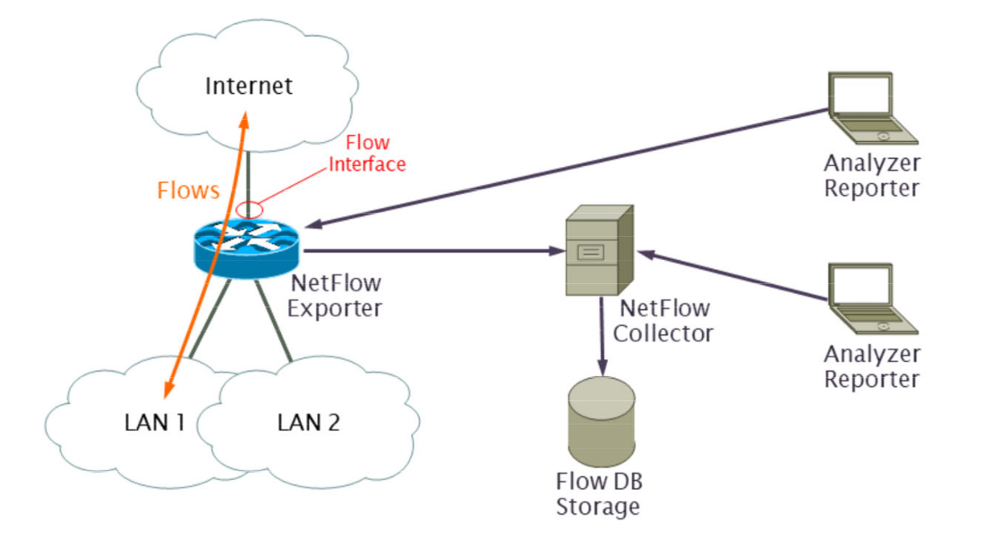

Security Tools 2
links: SPA TOC - Security Tools - Index
ARP (spoofing)
ARP, or Address Resolution Protocol, is a network communication protocol used for discovering the link layer address, such as a MAC address, associated with a given IP address. Its primary function is to translate IP addresses into MAC addresses, enabling communication within a local network segment. Sadly it is still relevant today.
ARP normal operation
Client A wants to reach Client B
- Client A sends an ARP query (layer 2, ethernet broadcast, FF:FF:FF:FF:FF:FF)
arp who-has 147.87.232.112 tell 147.87.232.37- All clients in the same layer2 subnet receive this query
- Client B updates its ARP-cache with the senders IP and MAC address and responds with an ARP reply
arp reply 147.87.232.112 is-at 00:15:58:28:2a:bc- The ARP-cache entry on Client A is updated with the received MAC address
ARP spoofing
Client E wants to listen on the traffic between Client A and Client B
- Client E sends to Client A “Client B can be found @ my MAC address”
- Client E sends to Client B “Client A can be found @ my MAC address”
- This results in spoofed (wrong) ARP cache entries at Client A and Client B
- All traffic between A and B is now redirected to E
- E can analyze traffic and forward it to the receiver
- ARP spoofing can also be used for DoS attacks by sending back wrong/illegal MAC address of Routers or Servers
Goals
- Passive sniffing
- only listening without any modifications
- Active modification
- injection of false data, malicious code, …
- DoS attack
- Set clients default gateway to non existing MAC
- Mac address flooding attack
- Flooding a switch with fake ARP queries/replies
Counter Measurements
- Static ARP entries (only possible in small environments)
- DHCP snooping and enforcement
- MAC/IP pairs are recorded during the DHCP process. Any non-matching ARP replies will be dropped.
- passive sniffing / monitoring
- e.g arpwatch notifies on suspicious MAC/IP pairs
- reverse ARP (RARP)
- Sends IP address to verify correct mac if two replies with different addresses where received.
IPv6 Neighbor Discovery spoofing
IPv6 uses ICMPv6 based Neighbor Discovery Protocol (NDP) as a replacement for ARP. Unfortunately, The NDP has similar security problems:
- Neighbor Discovery spoofing
- Rogue IPv6 Router Advertisements
SEcure Neighbor Discovery (SEND) would fix this issue
SNMP
Simple Network Management Protocol
- Multiple SNMP versions (v1, v2, v3)
- Query and manage network devices (routers, switches, …)
- Is extendable using MIBs
- Supports different messages: GET, SET, GETNEXT, GETBULK, RESPONSE and TRAP
- SNMP agent can be queried using UDP 161
- Agent sends traps to the management station using UDP 162 to signal error conditions
Wrongly configured network devices can be queried and/or reconfigured using SNMP attacks. E.g snmpwalk can find out different attributes of the device.
NMS
Network Monitoring Systems are used to monitor…
- Host resources using agents or SNMP
- Network services using service probe plug-ins
- environmental factors using network enabled sensors
Examples for Network Monitoring Systems are Nagios, Icinga , Zabbix and many more
Network Management Systems are used to do the same as Network Monitoring Systems but can also manage network device and services
Examples for Network Management Systems are OpenNMS, Zenoss and many more.
Network-/Host-Monitoring/-Graphing Tools
There are many Network Monitoring, Host-Monitoring and Graphing Tools out there. We will list some of them below:
Graphing Tools
- Multi Router Traffic Grapher (MRTG) UNIX/LINUX
- RRD (RoundRobinDatabase) grapher
- generates graphs of network traffic
- uses SNMP as data source
- PRTG Windows
- uses SNMP as data sources
Network monitoring and graphing tools
- Munin
- Agent based network monitoring and graphing tool
- Expandable with plug-ins
- Monitorix
- Free and open source
- Lightweight can be used on UNIX/LINUX
- Netdata
- Real-time performance and health monitoring of system/hosts
- Fast and efficient designed to run on all systems (physical & virtual servers, containers, IoT devices)
- Grafana
- Multi-platform open-source analytics and interactive visualization web app
- Provides charts, graphs and alerts from various supported data sources
- Plug-in system
- User can create dashboards
Network Flow Capturing
A network flow is an unidirectional sequence of packets sharing following attributes:
- Source and destination IP address
- Source and destination port number
- Protocol
- (Ingress interface and ToS//DiffSrv)
Network flow capturing, capture these flows and sends them to the flow collectors (where they will be archived and analyzed)
Initially developed by Cisco as “NetFlow” but now adapted and implemented by many vendors.
Architecture

- Flow: Unidirectional sequence of packets as described above
- Flow interface: Interface on network devices where the flows are captured. These flows can be captured on multiple interfaces.
- NetFlow Exporter: Network device that exports captured flow data to one or many NetFlow collectors.
- NetFlow Collector: System that collects flow data.
- Flow DB: Can be a files or a real database where flow data will be saved.
- NetFlow Analyzer/Reporter: Software able to visualize and analyze the stored flow data
Netflow version 5
Netflow version 5 uses UDP and SCTP to transport flows. It has the following fields:
- Version number
- Sequence number
- SNMP index of input and output interface
- Timestamp
- Number of packets
- Number of bytes
- source & destination IPv4 address
- source & destination port number
- If protocol is TCP flags
- IP Tos/DiffServ values
IPFIX
Internet Protocol Flow Information Export (IPFIX)
- Provides TLS/DTLS transport support
- Support template based flow export
- observation points and domains
Network flow capturing
There are 3 variants of Flow capturing:
- full
- can have performance impacts
- directed attacks possible
- sampled
- degraded accuracy
- directed attacks possible (less damage than full)
- in-line
- only link flows recordable
- TAP or SPAN port not visible
Software
The following software exist for network flow capturing/ IPFIX:
- softflowd
- Open vSwitch
- flowd
- flow-tools
- nfcap/nfdump
- nfsen
- nfsen-ng
Host Security
The following tools can be used for host security:
File integrity monitoring
- tripwire
- samhain
- AIDE
- and many more…
Antivirus (AV)
- ClamAV
- Virustotal
- and many more…
Rootkit detector
- Zeppoo, chkrootkit, rkhunter, OSSEC (Linux)
- MS RootkitRevealer, Sophos Anti-Rootkit, GMER (Windows)
Malware scanner/removal tools
- MS malicious software removal tool
- Malwarebytes Anti-Malware
- Spybot antispyware and AV
- ComboFix
Distribution
- Security Onion
- Free/open-source Linux distro
- network and host intrusion detection
- static analysis of PCAP and ECTX
- SOC workstation
links: SPA TOC - Security Tools - Index